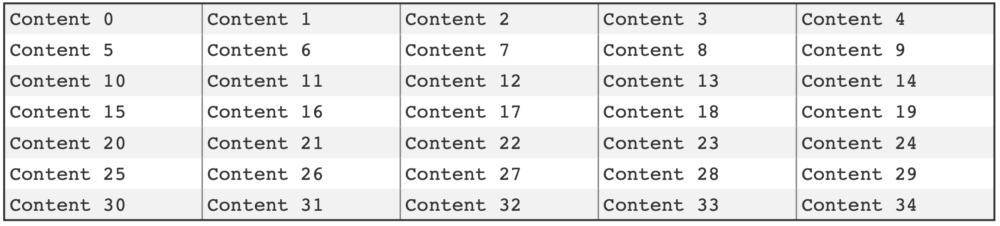

The format of each cell can be adjusted with respect to:
- Font-family and style (size, bold, italic etc.)
- Font- and background-color
- Border thickness and color
In this section we will focus on how to adjust the font and background color. The style can be adjusted both for the entire table at once and also for individual cells. The individual cell style will always override the table cell style.
The primary API to adjust the table style are:
HPDF_RGBColor background);
char *font, HPDF_REAL fsize,
HPDF_RGBColor color, HPDF_RGBColor background);
char *font, HPDF_REAL fsize,
HPDF_RGBColor color, HPDF_RGBColor background);
size_t r, size_t c,
char *font, HPDF_REAL fsize,
HPDF_RGBColor color, HPDF_RGBColor background);
size_t r,
char *font, HPDF_REAL fsize,
HPDF_RGBColor color, HPDF_RGBColor background);
size_t c,
char *font, HPDF_REAL fsize,
HPDF_RGBColor color, HPDF_RGBColor background);
int hpdftbl_set_background(hpdftbl_t t, HPDF_RGBColor background)
Set table background color.
Definition: hpdftbl.c:614
int hpdftbl_set_content_style(hpdftbl_t t, char *font, HPDF_REAL fsize, HPDF_RGBColor color, HPDF_RGBColor background)
Set text style for text content.
Definition: hpdftbl.c:1100
int hpdftbl_set_label_style(hpdftbl_t t, char *font, HPDF_REAL fsize, HPDF_RGBColor color, HPDF_RGBColor background)
Set the text style for labels in the entire table.
Definition: hpdftbl.c:1074
int hpdftbl_set_row_content_style(hpdftbl_t t, size_t r, char *font, HPDF_REAL fsize, HPDF_RGBColor color, HPDF_RGBColor background)
Set the text style for an entire row of cells.
Definition: hpdftbl.c:1124
int hpdftbl_set_cell_content_style(hpdftbl_t t, size_t r, size_t c, char *font, HPDF_REAL fsize, HPDF_RGBColor color, HPDF_RGBColor background)
Set the text style for content of specified cell.
Definition: hpdftbl.c:1171
int hpdftbl_set_col_content_style(hpdftbl_t t, size_t c, char *font, HPDF_REAL fsize, HPDF_RGBColor color, HPDF_RGBColor background)
Set the text style for an entire column of cells.
Definition: hpdftbl.c:1147
Core table handle.
Definition: hpdftbl.h:470
Adjusting fonts and colors
Fonts are specified as a string with the type font family name as recognized by the core Haru PDF library, e.g. "Times-Roman", "Times-Italic", "Times-Bold" etc. As a convenience not to have to remember the exact font name strings the following three font family are defined as HPDF_FF_* where the last part of the name is specified as the following table shows
| Font family | Italic | Bold | BoldItalic |
TIMES | TIMES_ITALIC | TIMES_BOLD | TIMES_BOLDITALIC |
HELVETICA | HELVETICA_ITALIC | HELVETICA_BOLD | HELVETICA_BOLDITALIC |
COURIER | COURIER_ITALIC | COURIER_BOLD | COURIER_BOLDITALIC |
Table 1: Predefined font family and variants
So to use the "Helvetic" font family the constant HPDF_FF_HELVETICA is used and so on.
Colors are specified in the standard Haru way, i.e. as an instance of the structure HPDF_RGBColor. As another convenience the following colors are predefined
#define HPDF_COLOR_DARK_RED (HPDF_RGBColor) { 0.6f, 0.0f, 0.0f }
#define HPDF_COLOR_RED (HPDF_RGBColor) { 1.0f, 0.0f, 0.0f }
#define HPDF_COLOR_LIGHT_GREEN (HPDF_RGBColor) { 0.9f, 1.0f, 0.9f }
#define HPDF_COLOR_GREEN (HPDF_RGBColor) { 0.4f, 0.9f, 0.4f }
#define HPDF_COLOR_DARK_GREEN (HPDF_RGBColor) { 0.05f, 0.37f, 0.02f }
#define HPDF_COLOR_DARK_GRAY (HPDF_RGBColor) { 0.2f, 0.2f, 0.2f }
#define HPDF_COLOR_LIGHT_GRAY (HPDF_RGBColor) { 0.9f, 0.9f, 0.9f }
#define HPDF_COLOR_XLIGHT_GRAY (HPDF_RGBColor) { 0.95f, 0.95f, 0.95f }
#define HPDF_COLOR_GRAY (HPDF_RGBColor) { 0.5f, 0.5f, 0.5f }
#define HPDF_COLOR_SILVER (HPDF_RGBColor) { 0.75f, 0.75f, 0.75f }
#define HPDF_COLOR_LIGHT_BLUE (HPDF_RGBColor) { 1.0f, 1.0f, 0.9f }
#define HPDF_COLOR_BLUE (HPDF_RGBColor) { 0.0f, 0.0f, 1.0f }
#define HPDF_COLOR_DARK_BLUE (HPDF_RGBColor) { 0.0f, 0.0f, 0.6f }
#define HPDF_COLOR_WHITE (HPDF_RGBColor) { 1.0f, 1.0f, 1.0f }
#define HPDF_COLOR_BLACK (HPDF_RGBColor) { 0.0f, 0.0f, 0.0f }
So for example to set the overall default font to 12pt Times Roman with black text on white bottom the following call must be made
...
hpdftbl_set_content_style(tbl,
HPDF_FF_TIMES, 12, HPDF_COLOR_BLACK, HPDF_COLOR_WHITE);
...
#define HPDF_FF_TIMES
Definition: hpdftbl.h:94
Since RGB for colors are specified as a floating point number in range [0.0, 1.0] and most color tables give colors as an integer triple there is exists a macro to make this conversion easier
#define HPDF_RGB_CONVERT(r,g,b) (HPDF_RGBColor){r/255.0,g/255.0,b/255.0}
which will allow the easier specification of color such as
#define HPDF_COLOR_ORANGE HPDF_RGB_CONVERT(0xF5, 0xD0, 0x98);
#define HPDF_COLOR_ALMOST_BLACK HPDF_RGB_CONVERT(0x14, 0x14, 0x14);
Using style callbacks
In much the same way as callbacks can be used for specifying content and labels so can a callback be used to specify the style of a cell or the entire table.
A style callback has the following signature
_Bool
_Bool(* hpdftbl_content_style_callback_t)(void *, size_t, size_t, char *content, hpdf_text_style_t *)
Type specification for the content style.
Definition: hpdftbl.h:353
Specification of a text style.
Definition: hpdftbl.h:303
In order for the settings to be applied the callback has to return a boolean TRUE value.
If the callback returns FALSE the settings will not be applied.
The parameters are used as follows:
- The
tag parameter has the same meaning as for content and label callbacks; an optional unique identifier for the table.** The tag parameter should always be checked for possible NULL value since it is not required for a table to have a tag.
- The
r and c arguments are the row and column of the cell the callback is made for
- The
content is the cell content string. The rationale for including this in the style callback is to allow for highlighting in the table of specific data. It could for example be something as simple as wanting to mark all values above a certain threshold with another background color in the table to draw attention.
- Finally, the actual style is encompassed by the
hpdf_text_style_t and is defined as the following structure
struct text_style hpdf_text_style_t
Specification of a text style.
enum hpdftbl_text_align hpdftbl_text_align_t
Enumeration for horizontal text alignment.
char * font
Definition: hpdftbl.h:304
HPDF_RGBColor color
Definition: hpdftbl.h:306
HPDF_REAL fsize
Definition: hpdftbl.h:305
hpdftbl_text_align_t halign
Definition: hpdftbl.h:308
HPDF_RGBColor background
Definition: hpdftbl.h:307
The style callbacks can exactly as the content callback be specified for either the entire table or for a specific cell. A cell callback will always override a table callback. The two functions to set up style callbacks are
int
size_t r, size_t c,
int
int hpdftbl_set_content_style_cb(hpdftbl_t t, hpdftbl_content_style_callback_t cb)
Set callback to specify cell content style.
Definition: hpdftbl_callback.c:690
int hpdftbl_set_cell_content_style_cb(hpdftbl_t t, size_t r, size_t c, hpdftbl_content_style_callback_t cb)
Set cell specific callback to specify cell content style.
Definition: hpdftbl_callback.c:664
- Note
- Due to som technicalities the style callbacks are called twice per cell. The first call is necessary to set up the background canvas and at that stage the content is not necessarily known since it could be later specified with a content callback. The first time the callback is made the
content parameter is always guaranteed to be NULL
Style callback example
An example of a callback function to set a background color for a header row/column for a table could for example be done as follows
_Bool
if( 0==r || 0==c ) {
style->
color = HPDF_COLOR_BLACK;
if ( c > 0 )
else
} else {
style->
color = HPDF_COLOR_BLACK;
}
}
@ CENTER
Definition: hpdftbl.h:294
@ LEFT
Definition: hpdftbl.h:293
#define HPDF_FF_HELVETICA_BOLD
Definition: hpdftbl.h:106
#define TRUE
Boolean truth value.
Definition: hpdftbl.h:47
and the table setup code can then be written as
void
create_table_ex09(HPDF_Doc pdf_doc, HPDF_Page pdf_page) {
const size_t num_rows = 4;
const size_t num_cols = 4;
HPDF_REAL height = 0;
}
hpdftbl_t hpdftbl_create(size_t rows, size_t cols)
Create a new table with no title.
Definition: hpdftbl.c:311
int hpdftbl_set_colwidth_percent(hpdftbl_t t, size_t c, float w)
Set column width as percentage of overall table width.
Definition: hpdftbl.c:435
int hpdftbl_stroke(HPDF_Doc pdf, const HPDF_Page page, hpdftbl_t t, const HPDF_REAL xpos, const HPDF_REAL ypos, const HPDF_REAL width, HPDF_REAL height)
Stroke the table.
Definition: hpdftbl.c:1682
#define A4PAGE_WIDTH_CM
Standard A4 paper width in cm.
Definition: hpdftbl.h:203
#define A4PAGE_HEIGHT_CM
Standard A4 paper height in cm.
Definition: hpdftbl.h:198
#define hpdftbl_cm2dpi(c)
Convert cm to dots using the default resolution (72 DPI)
Definition: hpdftbl.h:256
int hpdftbl_set_content_cb(hpdftbl_t t, hpdftbl_content_callback_t cb)
Set table content callback.
Definition: hpdftbl_callback.c:86
The resulting table is shown in Figure 10. below.

Figure 10: Using a style callback to highlight header rows & columns. tut_ex09.c
Adjusting grid line styles
There are four distinct set of grid lines as far as the library is concerned.
- The outer gridlines (or border) around the table, and
- The inner vertical grid line
- The inner horizontal grid line
- The inner top grid line (not the outer border!)
All these types of gridlines are styled in the same way using the functions
int
int
int
int
int hpdftbl_set_inner_tgrid_style(hpdftbl_t t, HPDF_REAL width, HPDF_RGBColor color, hpdftbl_line_dashstyle_t dashstyle)
Set inner horizontal top border grid style.
Definition: hpdftbl.c:540
int hpdftbl_set_inner_vgrid_style(hpdftbl_t t, HPDF_REAL width, HPDF_RGBColor color, hpdftbl_line_dashstyle_t dashstyle)
Set inner vertical border grid style.
Definition: hpdftbl.c:518
int hpdftbl_set_inner_grid_style(hpdftbl_t t, HPDF_REAL width, HPDF_RGBColor color, hpdftbl_line_dashstyle_t dashstyle)
Set inner border grid style.
Definition: hpdftbl.c:481
int hpdftbl_set_inner_hgrid_style(hpdftbl_t t, HPDF_REAL width, HPDF_RGBColor color, hpdftbl_line_dashstyle_t dashstyle)
Set inner horizontal border grid style.
Definition: hpdftbl.c:499
enum hpdftbl_dashstyle hpdftbl_line_dashstyle_t
Possible line dash styles for grid lines.
Each type of gridlines can be adjusted with line width, color and style. The last function in the list, hpdftbl_set_inner_grid_style(), is a convenience function that sets both the vertical and horizontal inner lines in one call.
The table below illustrates the various dashed line styles available and their names. See also hpdftbl_dashstyle and grid style functions hpdftbl_set_inner_grid_style(), hpdftbl_set_inner_vgrid_style() and hpdftbl_set_inner_hgrid_style()
| Dash Style | Illustration |
| LINE_SOLID |
|
| LINE_DOT1 |
|
| LINE_DOT2 |
|
| LINE_DOT3 |
|
| LINE_DOT4 |
|
| LINE_DASH1 |
|
| LINE_DASH2 |
|
| LINE_DASH3 |
|
| LINE_DASH4 |
|
| LINE_DASH5 |
|
| LINE_DASHDOT1 |
|
| LINE_DASHDOT2 |
|
The following example (tut_ex20.c ) makes use of these settings as shown below
void
create_table_ex20(HPDF_Doc pdf_doc, HPDF_Page pdf_page) {
const size_t num_rows = 5;
const size_t num_cols = 4;
HPDF_REAL height = 0;
}
int hpdftbl_set_content(hpdftbl_t t, char **content)
Set the content for the table.
Definition: hpdftbl.c:1048
int hpdftbl_set_outer_grid_style(hpdftbl_t t, HPDF_REAL width, HPDF_RGBColor color, hpdftbl_line_dashstyle_t dashstyle)
Set outer border grid style.
Definition: hpdftbl.c:460
@ LINE_SOLID
Definition: hpdftbl.h:376
@ LINE_DOT1
Definition: hpdftbl.h:377
void setup_dummy_content(content_t *content, size_t rows, size_t cols)
Create an array of char pointers to simulate real table data.
Definition: unit_test.inc.h:238
char ** content_t
An array of char pointers.
Definition: unit_test.inc.h:230
and when run will result in the following table:
Adding zebra lines in a table
A common way to make it easier to read a table is to make every other row a different color. This is sometimes known as zebra lines (or rows). This can be easily accomplished in the library by using the functions
int
int
int hpdftbl_set_zebra(hpdftbl_t t, _Bool use, int phase)
Definition: hpdftbl.c:556
int hpdftbl_set_zebra_color(hpdftbl_t t, HPDF_RGBColor z1, HPDF_RGBColor z2)
Specify first and second color for a zebra grid table.
Definition: hpdftbl.c:574
The first function is used to enable/disable row coloring and the second to set the first and second color. The phase parameter determines if color 1 is used first or is color 2 is used on the first row. Setting phase tom0 will make the first row use color 1 as background.
The default color are white and light gray. The following example ( tut_ex15.c ) shows how this can be done:
void
create_table_ex15(HPDF_Doc pdf_doc, HPDF_Page pdf_page) {
const size_t num_rows = 7;
const size_t num_cols = 5;
HPDF_REAL height = 0;
}
Running this example will give the following result
tut_ex15.c
We can make a small modification by setting phase = 1 (instead of the default 0) to start with color2. In addition, we can adjust the inner horizontal gridlines to have the same extra light gray as the zebra line making them "invisible" by modifying the table setup as follows (tut_ex15_1.c).
void
create_table_ex15(HPDF_Doc pdf_doc, HPDF_Page pdf_page) {
const size_t num_rows = 7;
const size_t num_cols = 5;
HPDF_REAL height = 0;
}
Running this gives the following result:
tut_ex15_1.c

- Note
- Another way to hide a gridline is to set its width to 0.